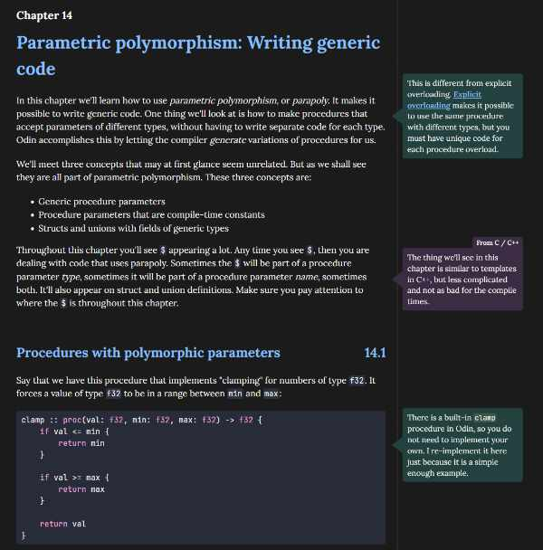
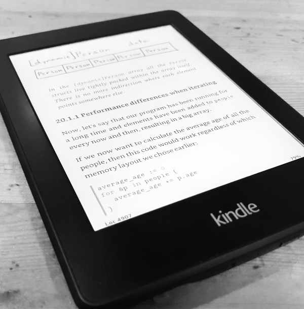

Do you want to learn the Odin Programming Language and demystify low-level programming?
Then this book is for you.
Understanding the Odin Programming Language teaches both basic and advanced concepts. You'll learn about procedures, manual memory management, parametric polymorphism, data-oriented design, and much more.
A programming language is a tool. By understanding your tools, you will become a better craftsperson. Therefore, on top of how to write Odin code, this book also provides explanations of why things work the way they do.
The target audience is anyone with some programming experience. Odin is a simple yet powerful language, making it a great introduction to low-level programming, regardless of your programming background.
Available formats:
HTML
Beautifully laid out and easy to navigate. A portable HTML file with all the fonts and images baked in. Similar to a PDF, but nicer to use.
The optimal reading experience on a computer. Can also be read on a phone or tablet.
Available on:
Itch (HTML + EPUB)
eBook
Specially suited for e-readers and eBook apps.
Nice and simple layout. Includes all illustrations and supports color.
Available on:
Itch (EPUB + HTML)
Available soon:
Amazon
Google Books
About the author

Karl Zylinski is a programmer and independent game developer. Most recently, he created the video game CAT & ONION. It was the first commercial video game made in the Odin Programming Language.
In the past Karl has worked as a game engine programmer at Our Machinery, Bitsquid and Autodesk. He has also worked as a game programmer at Hazelight (A Way Out) and Friendly Foe (SOULBOUND).
Karl has a bachelor's degree in astrophysics. In his free time he likes to play video games, hike, go bouldering and play piano.
Visit his website at zylinski.se.
Chat about Odin and game development on his Discord server.